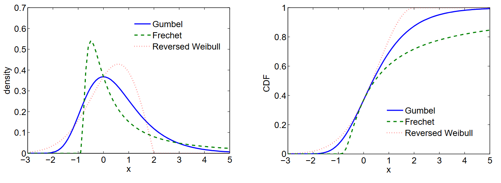

|
|
Recommender
systems: Random fields
This
research project aims to develop a sophisticated recommender system
that addresses the complex nature of user-service matching. By
combining local dependency structures and latent space approaches
through Markov Random Fields (MRFs), we will model multiple aspects
including hidden patterns, contexts, social networks, and multi-domain
relationships. The system will implement both user-specific and
item-specific MRFs with shared parameters, while optimizing graph
sparsity through correlation measures. The project will integrate
diverse data sources including ratings, content features, and social
information to improve recommendation accuracy and address the
cold-start problem through a hybrid network approach. Duration: 2007-2016
User correlation network in movie data.
Ordinal
choice modelling
This research
project aims to develop a novel collaborative filtering system that
properly addresses the ordinal nature of user ratings. Rather than
treating ratings as numerical or categorical values, we will implement
both McCullagh's grouped continuous model and the sequential decision
approach to handle ordinal preferences. The project will investigate
which approach better captures users' decision-making processes in
rating items. Using Matrix Factorization, Markov Random Fields and
ordinal Boltzmann Machines, we will develop models that account for the
relative ordering of ratings while incorporating user-item
interactions. The system will be evaluated on large-scale datasets to
validate its effectiveness in recommendation tasks. Duration: 2008-2016

Extreme value distributions as a basic for hidden utility modelling of choice.
Advances
in conditional random fields
This research project focuses on
advancing Conditional Random Fields (CRFs) through theoretical
developments and practical applications. The project will address three
key aspects: i) feature selection for handling structured and partially
observed data, ii) parameter estimation for efficient learning in
complex networks, and iii) development of Hierarchical CRFs for
modeling recursive sequential data. For Hierarchical CRFs we
will implement polynomial-time algorithms based on Asymmetric Inside
Outside methods for learning and inference, with particular attention
to handling missing data and partial observations. The models are
evaluated on a variety of real-world data including collaborativig
filtering, sentence annotation and activity recognition.
Duration: 2004-2008
(a) Symmetric Markov blanket, and (b) Asymmetric Markov blanket.
Advances
in Restricted Boltzmann Machines
This research project explores
novel applications and extensions of Restricted Boltzmann Machines
(RBMs), a powerful probabilistic model that assigns density to
multivariate data. Building on RBM's success in unsupervised deep
learning, we will develop advanced variants to handle diverse data
types, including binary, Gaussian, non-negative, and
mixed-variable data. We will study the modelling over matrices and
tensors, as well as introducing structural priors to embed knowledge
into the models. We will implement applications in document modeling,
medical object representation, anomaly detection, and patient profile
modeling. The project will leverage RBM's bipartite structure and
log-linear parameterization to create specialized models for face
recognition, anomaly detection, image retrieval, and collaborative
filtering.
Duration: 2008-2016
Vector RBM (Left) and Tensor RBM (Right)
Software
analytics and automation
Software
is eating the world. Automated software engineering helps improving
software development with better risk estimation, lower cost and higher
code quality. This project aims to develop a smart analytic engine for
software ecosystems through deep learning and representation learning
approaches. The project will focus on four key areas: defect/bug
prediction, language modeling, energy consumption analysis, and
recommender systems. We will create an institutional memory framework
that captures software development traces across multiple levels, from
issues to entire repositories. The system will implement end-to-end
methodologies for code analysis, project management, and deployment
monitoring. Key innovations include embedding SE artifacts, natural
language processing for software documentation, and creating a
programmer's smart assistant with continuous learning capabilities.
Duration: 2015-2019
A neural architecture for software projects analytics and automation.
Advances
in representation learning
This research project advances
representation learning through two main objectives: developing novel
deep neural networks for diverse data structures and advancing the
theory of representation disentanglement. We will develop innovative
architectures including matrix neural networks for efficient processing
of matrix-structured data using factorized matrix-to-matrix mappings.
For graphs, we will derive graph message-passing neural networks with
hierarchical attention for drug repurposing and chemical reaction
prediction. The project will also develop a new graph morphism
representation that treats graph transformations as sequential
decisions using Markov Decision Processes. Additionally, we will
establish theoretical foundations for disentangled representations by
introducing three information-theoretic concepts: informativeness,
separability, and interpretability. These concepts will be used to
create robust quantitative evaluation metrics and provide insights into
disentanglement learning models.
Duration: 2017-2020
Matrix recurrent neural networks -- everything is a matrix.
Understanding
GANs
This project investigates the theoretical foundations of Generative Adversarial Networks (GANs),
focusing on their generalization capacity. Through novel analysis
of GANs, the research will uncover the nature of catastrophic
forgetting and gradient exploding as key issues affecting
generalization and convergence. The project will introduce solutions
including continual learning algorithms and regularisations.
Additionally, it develops a new framework for evaluating generalization
in generative models, introducing a robust metric based on the Minimum
Description Length principle.
Duration: 2017-2021
Project as imagined by DALL.E 3.
Learning
relational and episodic structures in time
This project advances neural
network architectures for modeling relational and episodic structures
in temporal data. We consider multiple types of relations: (1) dyadic
relations evolving over time, (2) higher-order relations hidden in
multiple channels, (3) concept-linked, transductive relations between
parallel processes across time and across processes, and (4)
connections between static and dynamic modalities. We will
also investigate the best ways to represent episodes, relations within
and between episodes. To solve the challenges posed by these relational
and episodic structures, we will develop matrix-native models, set-native
models, message-passing recurrent graph networks, memory networks,
analogical reasoning and modality fusion strategies. Downstream tasks include anomaly detection, future prediction and classification in a variety of areas such as healthcare, EEG, traffic, and energy.
Duration: 2019-2023
A memory-based neural network for medical records, capturing temporal and analogical relations and episodic structures.
Advances
in anomaly detection
This project develops novel
anomaly detection methods for complex temporal and multivariate data.
It introduces three key innovations: (1) a mixed-data anomaly detector
using Restricted Boltzmann Machines that can handle both continuous and
discrete attributes across multiple abstraction levels, (2) a
matrix-native recurrent network for detecting anomalies in temporal
multiway data through prediction and compression strategies, and (3) a
message-passing encoder-decoder network that decouples and models
interactions between global movement and local posture for
human-centric video anomaly detection. The work demonstrates superior
performance across synthetic data, ECG recordings, and surveillance
videos.
Partners:
Telstra, Australian Department of Defence
Duration:
2017-2021
Anomaly in skeleton dynamics.
|